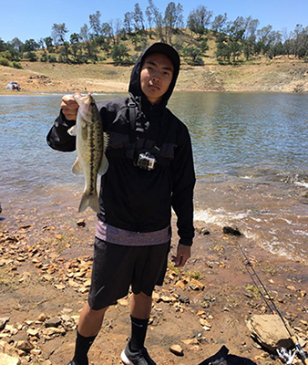

My name is Steven Vang, and I am a senior at Clovis High located in Clovis, CA. I was born in Detroit, Michigan on March 29, 2000. I moved to Fresno, California when I was a kid and have been here ever since. I plan to go to Fresno State next year, while majoring in mechanical engineering. I have experience working at a restaurant, since I tend to visit my family in Michigan every Summer and help my dad at a Chinese restaurant that he works at. During my junior year in highschool, I took an Electronic Systems Technology class that taught me how to work with wiring and did some coding. At the same time, towards the end of the class term, I earned my OSHA certification. This school year in highschool, I am currently taking an AP Calculus AB class while averaging an A. My specialty is anything that has to deal with math and critical thinking. Throughout my life, I would go out into the fields and help my grandma farm her crops. This included hard labor, planting, harvesting, and delivering crops to grocery stores and markets. Compared to farming, everything else is an easy job for me to do. Personally, I am the type of person who tends to put in a lot of work into something if I am truly interested. Examples being like my hobbies; taking photos, drawing, working out, fishing, playing video games, and playing sports. Going out into the wild or just anywhere where there’s signs of life is where I would take pictures.
Speaking of going out into the wild, if I were to see a body of water I would tend to have an urge to go fishing. From lakes, to streams, to rivers, to the ocean, I would be the first person you’d see fish in them.
As you can tell, I'm more of an outdoor person. Instead of fishing, I would most likely be out on the fields playing football. I play for in a Hmong League and part of a team called Scorpions. Before joining Scorpions, I played with a small pick-up team of friends, mostly highschool students, called Infamous. My team and I would participate in tournaments throughout California and maybe even out-of-state. I've participated in tournaments in Merced, Fresno, and Sacramento.
When I’m not outside exploring, playing sports, or fishing, I would sometimes be inside playing video games on my PlayStation 4. On my PS4, I will most likely be playing Fortnite, Street Fighter V, Overwatch, or Fallout 4.